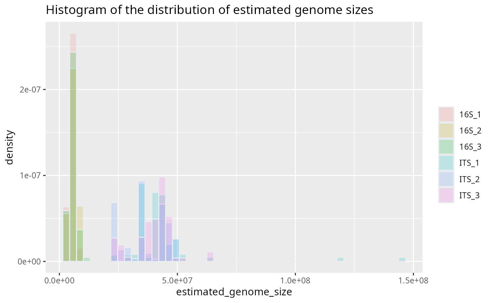
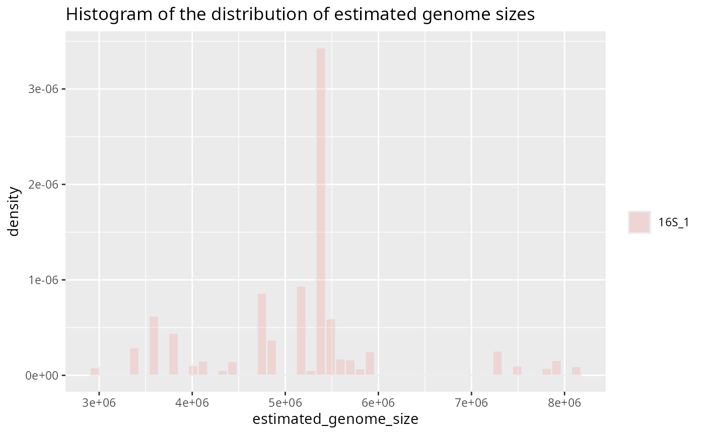
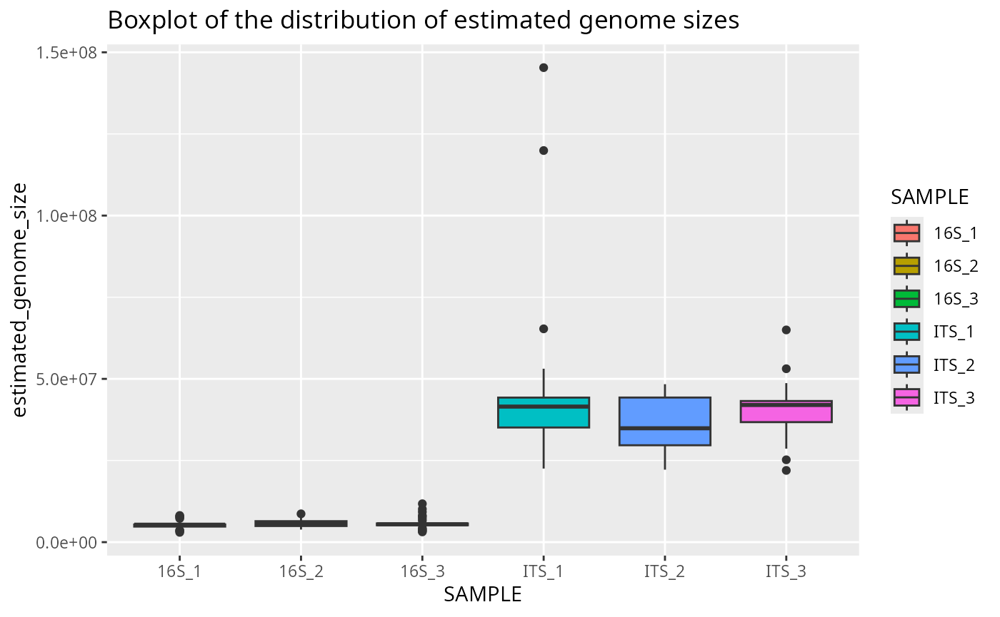
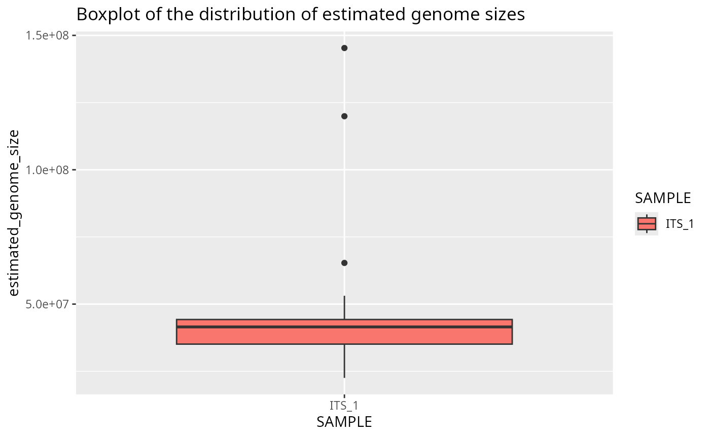
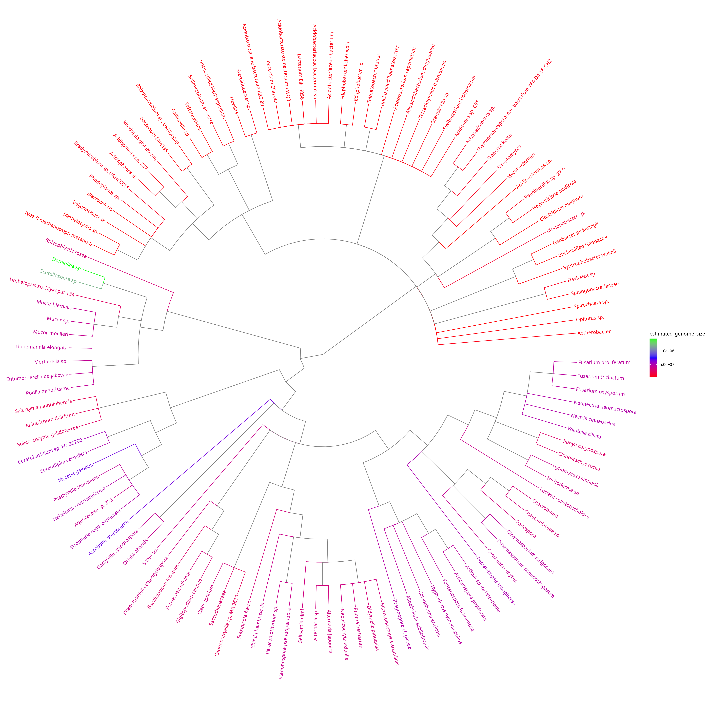

Example
example.RmdExample using default bayesian method on example file
This example data is a subset of the dataset from @Labouyrie2023-yc.
First, the genome sizes are predicted from the taxa:
results = estimate_genome_size(example_input_file, sep='\t', match_column='TAXID', output_format='input', ci_threshold = 0.3)
#############################################################################
# Genome size estimation summary:
#
# 22.22222 % estimations achieving required precision
#
Min. 1st Qu. Median Mean 3rd Qu. Max.
3007721 5408472 16980834 23969767 41811396 143278734
# Estimation status:
Confidence interval to estimated size ratio > ci_threshold OK
140 40 Plot genome size histogram per sample
Then, the results can be visualized using the plotting functions provided. This histogram shows the estimated genome sizes for each sample.
plotted_df = plot_genome_size_histogram(results)
Plot genome size histogram for one sample
plotted_df = plot_genome_size_histogram(results, only_sample='16S_1')
Plot genome size boxplot per sample
This boxplot shows the estimated genome sizes for each sample:
plotted_df = plot_genome_size_boxplot(results)
Plot genome size boxplot for one sample
plotted_df = plot_genome_size_boxplot(results, only_sample='ITS_1')
Plot simplified taxonomic tree with colour-coded estimated genome sizes
This tree shows the taxonomic relationships as well as the estimated genome sizes. The difference between the genome size distribution of bacteria (16S marker) and fungi (ITS marker) is visible.
plotted_df = plot_genome_size_tree(results, refdata_archive_path)## Untarring reference data
## Using reference data in: /tmp/RtmpzO6rdM/refdata
## Untarring taxonomy
## Using taxonomy: /tmp/RtmpzO6rdM/taxdump